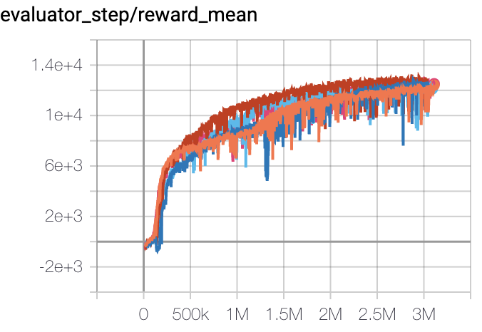
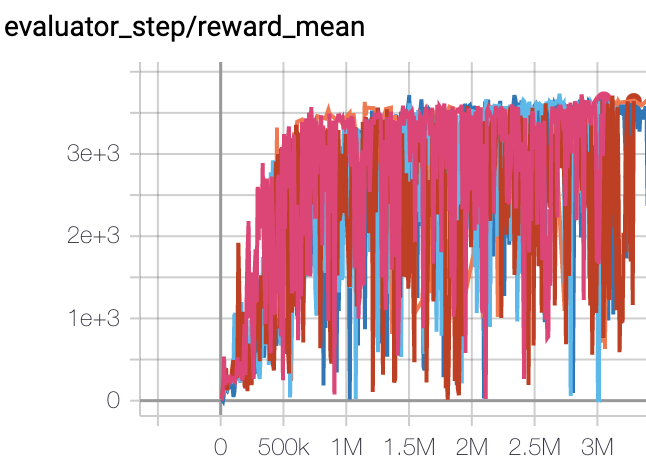

D4PG¶
Overview¶
D4PG, proposed in the paper Distributed Distributional Deterministic Policy Gradients, is an actor-critic, model-free policy gradient algorithm that extends upon DDPG. Improvements over DDPG include the use of N-step returns, prioritized experience replay and distributional value function. Moreover, training is parallelized with multiple distributed workers all writing into the same replay table. The authors found that these simple modifications contribute to the overall performance of the algorithm with N-step returns brining the biggest performance gain and priority buffer being the less crucial one.
Quick Facts¶
D4PG is only used for environments with continuous action spaces.(i.e. MuJoCo)
D4PG is an off-policy algorithm.
D4PG uses a distributional critic.
D4PG is a model-free and actor-critic RL algorithm, which optimizes actor network and critic network, respectively.
Usually, D4PG uses Ornstein-Uhlenbeck process or Gaussian process (default in our implementation) for exploration.
Key Equations or Key Graphs¶
The D4PG algorithm maintains a distributional critic \(Z_\pi(s, a)\) which estimates the expected Q value as a random variable such that \(Q(s, a)=\mathbb{E}Z_\pi(s, a)\). \(Z\) is usually a Categorical distribution over Q with 51 supports.
Accordingly, the distributional Bellman operator can be defined as:
The distributional variant of the operator takes functions which map from state-action pairs to distributions, and returns a function of the same form. The loss used to learn the critic distribution parameters is defined as \(L(\pi) = \mathbb{E}[d(\mathcal{T}_{\pi_{\theta'}}, Z_{w'}(s, a), Z_{w}(s, a)]\) for some metric \(d\) that measures the distance between two distributions.
Finally, the actor update is done by taking the expectation with respect to the action-value distribution:
When calculating the TD error, D4PG computes N-step in the TD target to incorporate rewards in more future steps:
D4PG samples from a prioritized replay buffer with a non-uniform probability \(p_i\). This requires the use of importance sampling, implemented by weighting the critic update by a factor of \(R_{p_i}^{-1}\).
Note
D4PG utilizes multiple parallel independent actors, gathering experience and feeding data into the same replay buffer. However, our implementation only makes use of a single actor.
Pseudocode¶
{kind=link}
source: https://lilianweng.github.io/posts/2018-04-08-policy-gradient/#d4pg¶
Implementations¶
The default config is defined as follows:
- class ding.policy.d4pg.D4PGPolicy(cfg: dict, model: Optional[Union[type, torch.nn.modules.module.Module]] = None, enable_field: Optional[List[str]] = None)[source]
- Overview:
Policy class of D4PG algorithm.
- Property:
learn_mode, collect_mode, eval_mode
- Config:
ID
Symbol
Type
Default Value
Description
Other(Shape)
1
typestr
d4pg
RL policy register name, referto registryPOLICY_REGISTRYthis arg is optional,a placeholder2
cudabool
True
Whether to use cuda for network3
random_collect_sizeint
25000
Number of randomly collectedtraining samples in replaybuffer when training starts.Default to 25000 forDDPG/TD3, 10000 forsac.5
learn.learning_rate_actorfloat
1e-3
Learning rate for actornetwork(aka. policy).6
learn.learning_rate_criticfloat
1e-3
Learning rates for criticnetwork (aka. Q-network).7
learn.actor_update_freqint
1
When critic network updatesonce, how many times will actornetwork update.Default 18
learn.noisebool
False
Whether to add noise on targetnetwork’s action.Default False forD4PG.Target Policy Smoo-thing Regularizationin TD3 paper.9
learn.-ignore_donebool
False
Determine whether to ignoredone flag.Use ignore_done onlyin halfcheetah env.10
learn.-target_thetafloat
0.005
Used for soft update of thetarget network.aka. Interpolationfactor in polyak averaging for targetnetworks.11
collect.-noise_sigmafloat
0.1
Used for add noise during co-llection, through controllingthe sigma of distributionSample noise from distribution, Gaussianprocess.12
model.v_minfloat
-10
Value of the smallest atomin the support set.13
model.v_maxfloat
10
Value of the largest atomin the support set.14
model.n_atomint
51
Number of atoms in the supportset of the value distribution.15
nstepint
3, [1, 5]
N-step reward discount sum fortarget q_value estimation16
prioritybool
True
Whether use priority(PER)priority sample,update priority
Model¶
Here we provide examples of QACDIST model as default model for D4PG.
- class ding.model.template.qac_dist.QACDIST(obs_shape: Union[int, ding.utils.type_helper.SequenceType], action_shape: Union[int, ding.utils.type_helper.SequenceType], action_space: str = 'regression', critic_head_type: str = 'categorical', actor_head_hidden_size: int = 64, actor_head_layer_num: int = 1, critic_head_hidden_size: int = 64, critic_head_layer_num: int = 1, activation: Optional[torch.nn.modules.module.Module] = ReLU(), norm_type: Optional[str] = None, v_min: Optional[float] = - 10, v_max: Optional[float] = 10, n_atom: Optional[int] = 51)[source]
- Overview:
The QAC model with distributional Q-value.
- Interfaces:
__init__,forward,compute_actor,compute_critic
- compute_actor(inputs: torch.Tensor) Dict[source]
- Overview:
Use encoded embedding tensor to predict output. Execute parameter updates with
'compute_actor'mode Use encoded embedding tensor to predict output.- Arguments:
- inputs (
torch.Tensor): The encoded embedding tensor, determined with given
hidden_size, i.e.(B, N=hidden_size).hidden_size = actor_head_hidden_size
- inputs (
mode (
str): Name of the forward mode.
- Returns:
outputs (
Dict): Outputs of forward pass encoder and head.
- ReturnsKeys (either):
action (
torch.Tensor): Continuous action tensor with same size asaction_shape.- logit (
torch.Tensor): Logit tensor encoding
muandsigma, both with same size as inputx.
- logit (
- Shapes:
inputs (
torch.Tensor): \((B, N0)\), B is batch size and N0 corresponds tohidden_sizeaction (
torch.Tensor): \((B, N0)\)logit (
list): 2 elements, mu and sigma, each is the shape of \((B, N0)\).q_value (
torch.FloatTensor): \((B, )\), B is batch size.
- Examples:
>>> # Regression mode >>> model = QACDIST(64, 64, 'regression') >>> inputs = torch.randn(4, 64) >>> actor_outputs = model(inputs,'compute_actor') >>> assert actor_outputs['action'].shape == torch.Size([4, 64]) >>> # Reparameterization Mode >>> model = QACDIST(64, 64, 'reparameterization') >>> inputs = torch.randn(4, 64) >>> actor_outputs = model(inputs,'compute_actor') >>> actor_outputs['logit'][0].shape # mu >>> torch.Size([4, 64]) >>> actor_outputs['logit'][1].shape # sigma >>> torch.Size([4, 64])
- compute_critic(inputs: Dict) Dict[source]
- Overview:
Execute parameter updates with
'compute_critic'mode Use encoded embedding tensor to predict output.- Arguments:
obs,actionencoded tensors.mode (
str): Name of the forward mode.
- Returns:
outputs (
Dict): Q-value output and distribution.
- ReturnKeys:
q_value (
torch.Tensor): Q value tensor with same size as batch size.distribution (
torch.Tensor): Q value distribution tensor.
- Shapes:
obs (
torch.Tensor): \((B, N1)\), where B is batch size and N1 isobs_shapeaction (
torch.Tensor): \((B, N2)\), where B is batch size and N2 is``action_shape``q_value (
torch.FloatTensor): \((B, N2)\), where B is batch size and N2 isaction_shapedistribution (
torch.FloatTensor): \((B, 1, N3)\), where B is batch size and N3 isnum_atom
- Examples:
>>> # Categorical mode >>> inputs = {'obs': torch.randn(4,N), 'action': torch.randn(4,1)} >>> model = QACDIST(obs_shape=(N, ),action_shape=1,action_space='regression', \ ... critic_head_type='categorical', n_atoms=51) >>> q_value = model(inputs, mode='compute_critic') # q value >>> assert q_value['q_value'].shape == torch.Size([4, 1]) >>> assert q_value['distribution'].shape == torch.Size([4, 1, 51])
- forward(inputs: Union[torch.Tensor, Dict], mode: str) Dict[source]
- Overview:
Use observation and action tensor to predict output. Parameter updates with QACDIST’s MLPs forward setup.
- Arguments:
- Forward with
'compute_actor': - inputs (
torch.Tensor): The encoded embedding tensor, determined with given
hidden_size, i.e.(B, N=hidden_size). Whetheractor_head_hidden_sizeorcritic_head_hidden_sizedepend onmode.
- inputs (
- Forward with
'compute_critic', inputs (Dict) Necessary Keys: obs,actionencoded tensors.
mode (
str): Name of the forward mode.
- Forward with
- Returns:
outputs (
Dict): Outputs of network forward.- Forward with
'compute_actor', Necessary Keys (either): action (
torch.Tensor): Action tensor with same size as inputx.- logit (
torch.Tensor): Logit tensor encoding
muandsigma, both with same size as inputx.
- logit (
- Forward with
'compute_critic', Necessary Keys: q_value (
torch.Tensor): Q value tensor with same size as batch size.distribution (
torch.Tensor): Q value distribution tensor.
- Forward with
- Actor Shapes:
inputs (
torch.Tensor): \((B, N0)\), B is batch size and N0 corresponds tohidden_sizeaction (
torch.Tensor): \((B, N0)\)q_value (
torch.FloatTensor): \((B, )\), where B is batch size.
- Critic Shapes:
obs (
torch.Tensor): \((B, N1)\), where B is batch size and N1 isobs_shapeaction (
torch.Tensor): \((B, N2)\), where B is batch size and N2 is``action_shape``q_value (
torch.FloatTensor): \((B, N2)\), where B is batch size and N2 isaction_shapedistribution (
torch.FloatTensor): \((B, 1, N3)\), where B is batch size and N3 isnum_atom
- Actor Examples:
>>> # Regression mode >>> model = QACDIST(64, 64, 'regression') >>> inputs = torch.randn(4, 64) >>> actor_outputs = model(inputs,'compute_actor') >>> assert actor_outputs['action'].shape == torch.Size([4, 64]) >>> # Reparameterization Mode >>> model = QACDIST(64, 64, 'reparameterization') >>> inputs = torch.randn(4, 64) >>> actor_outputs = model(inputs,'compute_actor') >>> actor_outputs['logit'][0].shape # mu >>> torch.Size([4, 64]) >>> actor_outputs['logit'][1].shape # sigma >>> torch.Size([4, 64])
- Critic Examples:
>>> # Categorical mode >>> inputs = {'obs': torch.randn(4,N), 'action': torch.randn(4,1)} >>> model = QACDIST(obs_shape=(N, ),action_shape=1,action_space='regression', \ ... critic_head_type='categorical', n_atoms=51) >>> q_value = model(inputs, mode='compute_critic') # q value >>> assert q_value['q_value'].shape == torch.Size([4, 1]) >>> assert q_value['distribution'].shape == torch.Size([4, 1, 51])
Benchmark¶
environment |
best mean reward |
evaluation results |
config link |
comparison |
|---|---|---|---|---|
Halfcheetah (Halfcheetah-v3) |
13000 |
 | ||
Walker2d (Walker2d-v2) |
5300 |

|
||
Hopper (Hopper-v2) |
3500 |
 |
Other Public Implementations¶
References¶
Gabriel Barth-Maron, Matthew W. Hoffman, David Budden, Will Dabney, Dan Horgan, Dhruva TB, Alistair Muldal, Nicolas Heess, Timothy Lillicrap: “Distributed Distributional Deterministic Policy Gradients”, 2018; [https://arxiv.org/abs/1804.08617v1 arXiv:1804.08617v1].